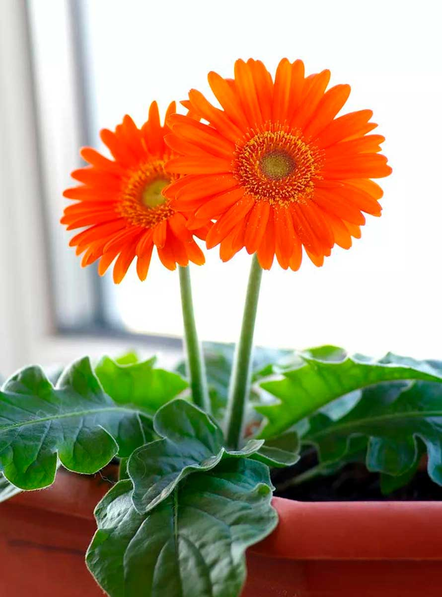
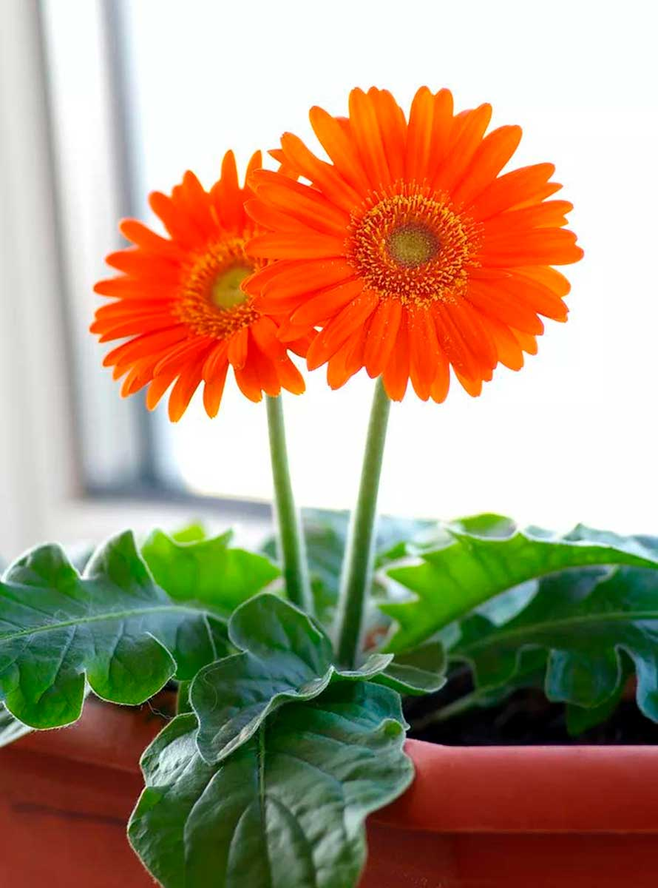

LAS GERBERAS
Las Gerberas son populares por sus colores brillantes y alegres, y sus grandes flores similares a las margaritas. Pertenecen a la familia Asteraceae y vienen en varios tonos, incluidos rojo, rosa, naranja, amarillo y blanco. Estas flores son nativas de Sudáfrica y se utilizan a menudo en arreglos florales y jardines por su apariencia vibrante y su larga vida en jarrones.
Galería

 

- Gerberas Rojas: Simbolizan amor y pasión.
- Gerberas Rosas: Representan admiración y gratitud.
- Gerberas Amarillas: Significan alegría y felicidad.
- Gerberas Naranjas: Expresan entusiasmo y calidez.
- Gerberas Blancas: Representan pureza e inocencia.
Significado según el número de gerberas
- Una Gerbera: Simboliza simplicidad, determinación y admiración pura.
- Dos Gerberas: Representa sentimientos mutuos o una relación en ciernes.
- Tres Gerberas: Significa "Te amo" o los tres componentes clave de una relación saludable: amor, confianza y respeto.
- Cinco Gerberas: Indica admiración, respeto y un deseo de transmitir positividad y alegría.
- Siete Gerberas: A menudo se dan como un gesto de amistad profunda y sincera.
- Diez Gerberas: Simboliza perfección y plenitud, a menudo se da para expresar una sensación de plenitud con el destinatario.
- Doce Gerberas: Representa un ciclo completo, como un año, y a menudo se da como señal de fuerte afecto o para celebrar un aniversario.
- Quince Gerberas: Significa disculpa o arrepentimiento, una forma de decir "Lo siento" o pedir perdón.
- Veinte Gerberas: Representa sinceridad y verdad, a menudo se da para mostrar apreciación genuina y honestidad.
- Cincuenta Gerberas: Un gran gesto, simbolizando amor incondicional, admiración y un vínculo eterno.
clic para más